Who do you play first?
These three are kind to newcomers. Five more are waiting inside.
Small games. Eight cats.
Each one plays its own way.
Works offline. No ads.
These three are kind to newcomers. Five more are waiting inside.
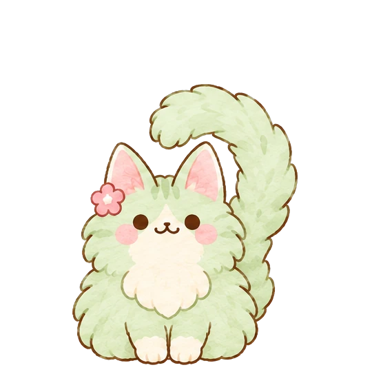
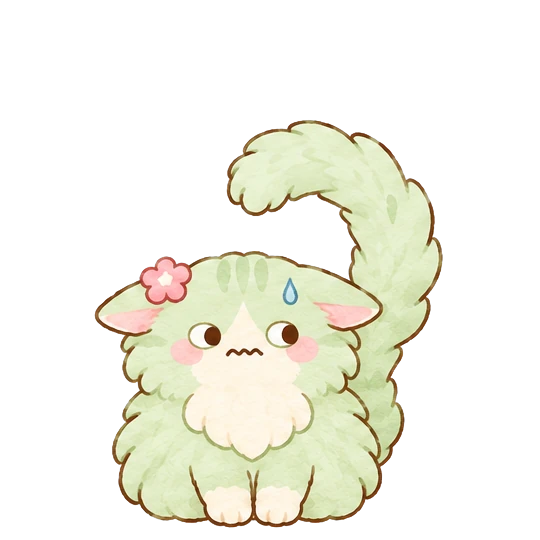
Ears forward: the cat likes where it stands. Ears flat: it is worried.
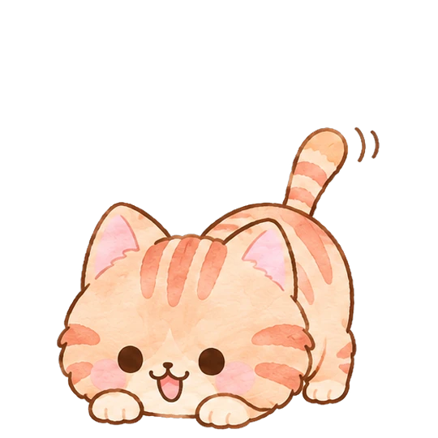
Boop!You always see it coming. Boop the nose and the prank is off. A prank gets in your way for a moment. It never takes anything from you.
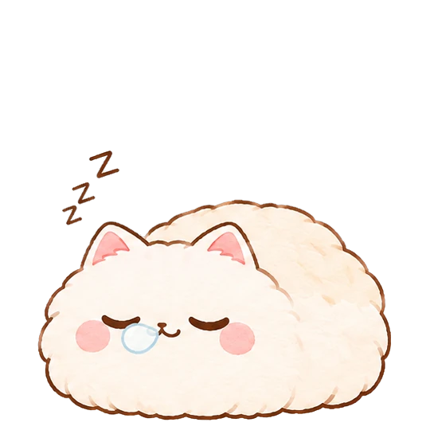
Tofu falls asleep if you take your time. Find a cat's weak spot and you know how to beat it.
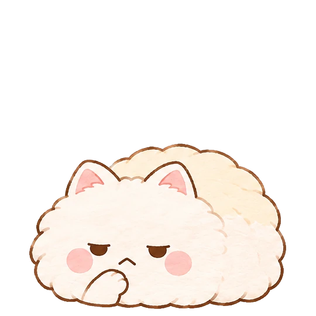
The cat will wait. The table stays as it is.
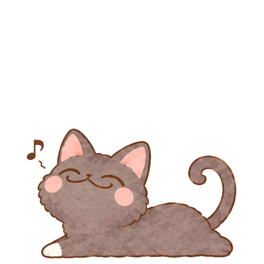
Designed for the first version. Not playable in this mock.
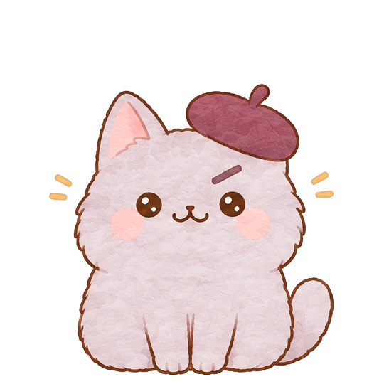
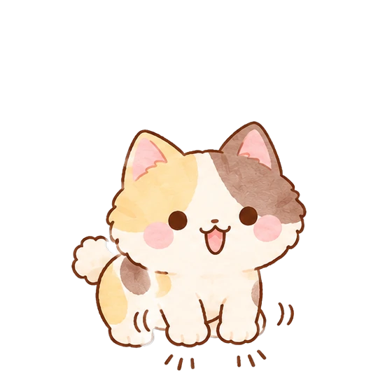
Button · bid 4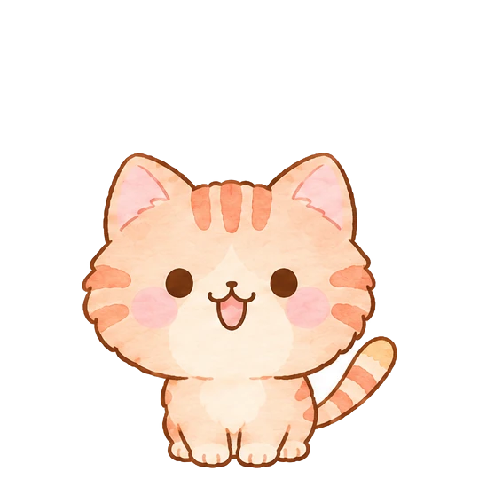
Mango · bid 5Plum's ears are up: she is strong in hearts
Designed for the first version. Not playable in this mock.
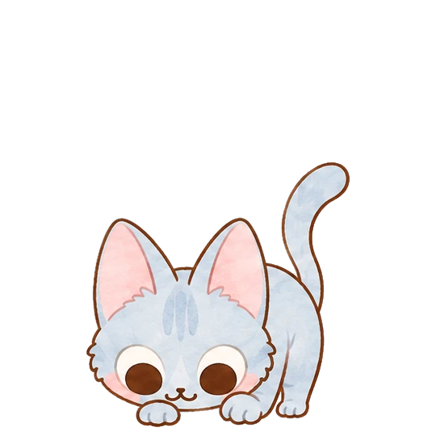
Designed for the first version. Not playable in this mock.
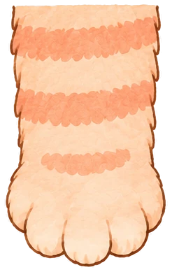
Designed for the first version. Not playable in this mock.
The same game is a different game with each of them.
Beat a cat at a game and you get that stamp.
Beat a cat five times and it gives you the thing it loves.
Beat a cat at a game and you get that stamp.
Beat a cat five times and it gives you the thing it loves.
The cat pranks whoever is ahead, so the game stays close to the end.
Put the phone between you and take turns, or hold one end each. Fireside Spades needs hidden hands, so it is not for two.
One payment. No subscription, no ads.
Tofu, Mint and Mango at Basket Duel, Pair Nap and Paw Drop. Two people play and the stamp book are free too.
Eight cats, ten games. Eighty stamps to earn.
Your records stay on this iPhone. There is no account and no server.